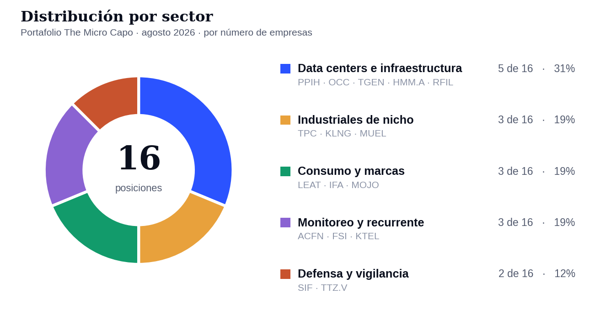

Esto no es asesoría de inversión. Es mi cartera y mi razonamiento para mantenerme honesto y disciplinado.
Antes de los números, la parte incómoda
Llevo varios años haciendo esto y hay algo que me costó muchísimo aceptar, así que lo escribo aquí porque escribirlo es la única forma en que se me queda.
La codicia no siempre se ve como codicia. A veces se disfraza de esfuerzo. Le metiste horas a una tesis, leíste los diez últimos 10-Q, hiciste el modelo, entendiste el negocio mejor que nadie que conozcas, y entonces la posición se va en contra. Y en lugar de aceptar que te equivocaste, empiezas a buscar culpables afuera. Que el mercado no lo entiende todavía. Que el sector está fuera de moda. Que los microcaps siempre tardan. Que ya va a llegar el catalizador. Cualquier cosa menos la posibilidad de que la idea simplemente estaba mal.
Es una trampa muy fácil de caer porque se siente justa. Sientes que si le pusiste ganas, el mercado te debe algo. Y el mercado no le debe nada a nadie. El esfuerzo no es una garantía de retorno, es nada más el precio de entrada para tener derecho a opinar.
Ya intenté varias estrategias. Opciones, mega caps, trading de corto plazo, sistemático, microcaps. Y cambiar de opinión sobre cuál me funciona no me hace inconsistente, me hace alguien que está aprendiendo. Invertir en cosas que no conozco para saber si me gustan o no es parte del trabajo, no una traición al proceso. A lo mejor te estás perdiendo de un sector entero que te encantaría y nunca lo vas a saber porque todo mundo dice que es complicado y le hiciste caso a todo mundo.
Y al final del día, después de dar todas esas vueltas, sigo llegando al mismo lugar. No hay nada como invertir en lo que conoces, o al menos en lo que te sientes cómodo. Eso ya lo probé desde varios lados y ahí es donde termino.
Donde yo me siento más cómodo es en los microcaps. Y lo digo sabiendo perfectamente que la volatilidad es extrema, que hay semanas en las que una posición se te va -30% sin noticia, y que la liquidez a veces es un chiste. Pero es un nicho donde todavía puedes encontrar cosas que no son trending topic en X ni en ningún otro lado. Donde nadie te va a explicar la empresa antes que tú, porque no hay analistas cubriéndola y no hay hilos virales sobre ella. Y eso, para mí, es lo único que de verdad te permite diferenciarte de lo que anda circulando en redes. Si vas a comprar lo mismo que ya está en todos lados, ya vas tarde y encima estás pagando la fama. Aquí el trabajo todavía vale algo.
La otra parte es el tiempo. Hay gente que hace retornos enormes en un año y los ves en Twitter y te dan ganas de correr. Lo difícil no es hacerlo un año, lo difícil es sostenerlo. Y ahí me gusta mucho una frase de Lao Tzu que me repito seguido:
"Nature is not in a hurry, yet everything is accomplished."
La naturaleza no tiene prisa y sin embargo todo se cumple. No le tengo que rendir cuentas a nadie. Esto lo escribo como benchmark personal, no para ganarle a alguien. Y si es un proceso de aprendizaje, no se resuelve en un año. Mínimo diez años para saber si eres bueno en algo, y llevo bastante menos que eso.
Así que sin prisa y sin comparaciones, porque siempre va a haber alguien que lo haga mejor y más rápido. Prefiero enfocarme en los análisis de cada empresa y en entender de verdad lo que tengo. No hay nada de malo en sacar ideas de alguien más, yo lo hago todo el tiempo. Pero la convicción no se puede copiar. La convicción es lo único que te sostiene cuando la posición está -30% y tienes que decidir si promedias, si aguantas o si te sales. Y esa decisión no te la puede prestar nadie.
Por qué me gustan las empresas con muchos años de historia
Esto conecta directo con lo de arriba y es la razón de que mi portafolio se vea como se ve.
Cuando escribí la tesis de SIFCO me cayó el veinte de algo. SIFCO fue fundada en 1913. Ha sobrevivido dos guerras mundiales, la Gran Depresión, la crisis del petróleo, el 2008, el covid, y sigue forjando piezas para motores de avión y trenes de aterrizaje. Una empresa que lleva más de cien años haciendo lo mismo ya pasó por todo lo que le podía pasar. Eso no es una garantía de nada, pero sí es información.
Cuando compro un negocio de treinta o de ochenta años estoy comprando algo que ya demostró que puede existir en malos años. La curva de aprendizaje ya se pagó, los clientes ya existen, las plantas ya están construidas y depreciadas, y muchas veces la familia fundadora sigue ahí con su dinero adentro. Lo que estoy comprando no es la promesa, es la base. Y encima de esa base compro una sola cosa nueva, algo concreto que cambió y que el mercado todavía no está pagando.
Miren la lista: SIFCO de 1913, Hammond de 1917, Paul Mueller de 1940, RF Industries de 1979, Optical Cable de 1983, Perini de 1894. Koil lleva 28 años en el Golfo de México. No son historias de crecimiento explosivo, son negocios aburridos con muchos años de historia donde algo cambió recientemente.
Y ese "algo cambió" en este ciclo casi siempre se llama data centers.
El libro del trimestre: Richer, Wiser, Happier
Estoy leyendo Richer, Wiser, Happier de William Green y lo recomiendo muchísimo. Green fue periodista financiero por años y en lugar de escribir otro libro de fórmulas se sentó a entrevistar a inversionistas enormes para entender cómo piensan y, sobre todo, cómo viven. Ahí están Mohnish Pabrai, John Templeton, Howard Marks, Charlie Munger, Nick Sleep, Ed Thorp, Bill Miller. El punto del libro no es cómo escoger acciones, es que la forma de invertir bien y la forma de vivir bien terminan siendo la misma cosa: paciencia, temperamento, humildad, y saber cuándo no hacer nada.
Me ha ayudado mucho a calmarme en esta temporada de resultados. Cuando tienes dieciséis empresas reportando en tres semanas es muy fácil ponerte reactivo y tomar decisiones por el resultado de un solo trimestre.
Mi capítulo favorito es el de Joel Greenblatt, el de la simplicidad. Greenblatt hizo cerca de 50% anual durante una década en Gotham Capital y su mensaje es casi ofensivamente simple: encuentra negocios buenos que estén baratos y ten la disciplina de esperar. Nada de veinte factores. Una idea sencilla que entiendes de verdad y a la que te aferras cuando todo te dice lo contrario. Recomiendo mucho que lean sus libros, You Can Be a Stock Market Genius y The Little Book That Beats the Market, y que vean cómo es como persona. Es de los pocos que explica cosas complicadas sin hacerte sentir tonto.
Y de Mohnish Pabrai me quedo con la idea de clonar, que es de las cosas más liberadoras que he leído. Pabrai no se esfuerza en ser original, se esfuerza en copiar bien. Yo hago exactamente eso. Muy rara vez encuentro una acción por mi cuenta. Casi todas mis posiciones salieron de ideas de amigos, de blogs de inversión, de gente que respeto y que ya hizo el primer filtro. Y no me da ninguna pena decirlo.
Lo que sí no se clona es la convicción. La idea me la pueden dar, pero el trabajo de entenderla, modelarla y decidir cuánto peso le pongo es mío, y es lo único que me va a sostener cuando la posición se vaya en contra. Ahí es donde se separa clonar de seguir a alguien.
Cómo está armado el portafolio hoy
Dieciséis posiciones en la cuenta discrecional. Vendí toda la capa de biotech durante el verano, así que lo que queda es el core y nada más.
| Ticker | Empresa | Sector |
|---|---|---|
| $PPIH | Perma-Pipe International | Data centers e infraestructura de energía |
| $OCC | Optical Cable | Data centers e infraestructura de energía |
| $TGEN | Tecogen | Data centers e infraestructura de energía |
| $HMM.A | Hammond Manufacturing | Data centers e infraestructura de energía |
| $RFIL | RF Industries | Data centers e infraestructura de energía |
| $SIF | SIFCO Industries | Defensa, aeroespacial y vigilancia |
| $TTZ.V | Total Telcom | Defensa, aeroespacial y vigilancia |
| $TPC | Tutor Perini | Industriales de nicho |
| $KLNG | KOIL Energy | Industriales de nicho |
| $MUEL | Paul Mueller | Industriales de nicho |
| $LEAT | Leatt Corporation | Consumo y marcas |
| $IFA | iFabric | Consumo y marcas |
| $MOJO | Equator Beverage | Consumo y marcas |
| $ACFN | Acorn Energy | Monitoreo y recurrente |
| $FSI | Flexible Solutions | Monitoreo y recurrente |
| $KTEL | KonaTel | Monitoreo y recurrente |

Por qué tan cargado a data centers
Esta es la pregunta que más me hacen, así que la contesto directo.
No compré data centers. No tengo ni un REIT, ni un hyperscaler, ni una acción de las que salen en las noticias. Lo que tengo son cinco de dieciséis empresas que son proveedores de segunda y tercera derivada, que llevan décadas vendiéndole a otros mercados y que de repente tienen un cliente nuevo enorme tocándoles la puerta.
La lógica es esta. Cuando se construye un data center, alguien tiene que meter la fibra, alguien tiene que enfriar el edificio, alguien tiene que hacer la tubería preaislada, alguien tiene que fabricar los gabinetes y racks eléctricos, y alguien tiene que jalar el cable. Esos alguien son empresas viejas, aburridas, con plantas ya construidas y capacidad ociosa. No cotizan a múltiplos de IA porque nadie las clasifica como IA. Cotizan como lo que han sido siempre, fabricantes industriales de nicho.
Ese es el arbitraje. No estoy pagando por la narrativa, estoy pagando por el negocio de siempre y me llevo la narrativa gratis mientras se materialice.
Los riesgos de esto también los tengo que decir en voz alta y son tres. Uno, es una sola apuesta macro disfrazada de varias posiciones distintas. Si el capex de data centers se enfría, se enfrían todas al mismo tiempo. Dos, en varias de ellas la exposición a data centers no está desglosada en los reportes, o sea que estoy confiando en comentarios de management y no en una línea auditada. Y tres, en el caso de Hammond, el ángulo de data centers es tesis mía y de terceros, no algo que la empresa haya dicho. Su management habla de demanda norteamericana y de aranceles, no de IA. Eso hay que tenerlo claro.
Si esta concentración me sale mal, va a ser por esas tres razones y no por sorpresa.
El recorrido, empresa por empresa
Nota antes de empezar. No todas reportaron. OCC, Perma-Pipe y RF Industries tienen años fiscales corridos y su trimestre cerrado al 31 de julio sale hasta septiembre. Total Telcom cierra año fiscal el 30 de junio y reporta hasta octubre. En esos cuatro casos explico el último trimestre reportado y digo cuándo viene el siguiente.
Bloque A — Data centers y energía
$PPIH — Perma-Pipe. Todavía no reporta el trimestre cerrado en julio, sale a mediados de septiembre. Lo último que tenemos es el trimestre cerrado en abril: ventas $50.3M, +7.5%, pero el margen bruto se cayó de 35.8% a 28.9% y la utilidad por acción bajó de $0.62 a $0.22. La caída de margen es por mezcla de proyectos, arranque de las plantas de Ohio y Qatar, y costos de auditoría por el cambio a accelerated filer. Nada de eso es estructural. El backlog subió 12% a $136.5M y el CEO atribuyó buena parte de ese aumento a proyectos de data centers de IA en Norteamérica, que es exactamente la tesis. Y el 20 de agosto anunciaron más de $67M en órdenes nuevas cerradas durante el trimestre, incluyendo el proyecto de detección de fugas más grande de su historia en Medio Oriente. O sea que las ventas van a llegar, el tema es el margen. En septiembre vemos si Ohio y Qatar ya dejaron de sangrar.
$OCC — Optical Cable. Igual que Perma-Pipe, reporta hasta septiembre. Su último reporte, el de junio, fue de los mejores del año en todo el portafolio: ventas $22.2M, +26.6%, margen bruto de 30.4% a 34.2%, y pasaron de perder $0.09 por acción a ganar $0.12. El backlog terminó en $13.3M, 82% arriba del cierre fiscal. La acción hizo +61% ese día. El CEO nombró explícitamente data centers como uno de los tres motores, junto con enterprise y severe duty. Un matiz honesto que él mismo aclaró en el call: no le venden directo a los hyperscalers, le venden a data centers empresariales y multi-tenant, y se benefician del arrastre. Aparte está el tema de Furukawa y Lightera que ya expliqué en su momento. Aproveché la debilidad de julio para agregar más a $13.25.
$TGEN — Tecogen. Reportó el 12 de agosto y el reporte, visto solo, es feo: ventas $5.75M, -21%, con productos cayendo -64% a $1.13M. Pérdida neta de $0.07 por acción. Pero hay que leer el desglose. Servicios creció +10% y ya son $4.38M del trimestre, energy production +35%, y el margen bruto subió de 33.8% a 37.8% precisamente por esa mezcla. Servicios es el piso, no la tesis. La tesis es la venta de chillers a data centers y ahí lo que hubo fue esto: doce demostraciones en dos meses, ocho de ellas con clientes finales directos, con entidades que representan más de 8 gigawatts operando y controlan entre 15% y 20% de toda la capacidad de data centers de Estados Unidos. Cambiaron de estrategia deliberadamente, de data centers chicos a hyperscalers y desarrolladores grandes. Backlog base arriba de $8M más $2-3M por cerrar. Y construyeron $12M de inventario a propósito para poder entregar rápido cuando lleguen las órdenes. Ahí está el problema y la oportunidad: con $6.78M de caja, ese inventario es una apuesta a órdenes que todavía no están firmadas. Todavía no hay una sola orden de hyperscaler anunciada. Es la posición donde el reloj corre más rápido, y aun así agregué más en julio y en agosto.
$HMM.A — Hammond Manufacturing. Récord de todo. Reportó el 28 de julio: ventas C$85.0M, +19.2%, margen bruto de 34.1% a 38.6%, utilidad neta C$7.3M, +87%, y utilidad por acción de C$0.34 a C$0.64. El semestre va en C$160.2M con utilidad de C$12.67M. El margen lleva tres trimestres seguidos expandiéndose, de 30.7% al cierre del año pasado a 36.3% y ahora 38.6%. Ahora la letra chica, y es importante: el propio CEO dijo que parte de esa expansión viene de una reducción temporal de costos arancelarios en Estados Unidos. Temporal, palabra de él. No hay que extrapolar los 448 puntos base completos hacia adelante. Siguen con la expansión de 85,000 pies cuadrados y capacidad nueva de pintura y fabricación en todas las plantas. Es la que mejor se ha portado del bloque industrial.
$RFIL — RF Industries. Reporta a mediados de septiembre. Hace poco subí la tesis completa a themicrocapo.com, ahí está el detalle. En el trimestre de abril hicieron $20.7M en ventas, +9%, con margen bruto de 31.5% a 35.1%, utilidad no-GAAP de $0.14 por acción contra $0.07, y EBITDA ajustado +82%. Lo mejor no fue el reporte sino los bookings: $26.3M en el trimestre, el mejor en años, con backlog en $20M. La pieza de data centers aquí se llama DAC, direct air cooling. Lo están metiendo en data centers de borde, que son los chicos y distribuidos que se ponen cerca de donde se usa el dato en lugar de los megacampus, y el management dice que puede ser hasta 75% más eficiente en costos que un sistema HVAC tradicional. No lo posicionan contra el liquid cooling sino como complemento. Es la tesis de "vendedor de producto a vendedor de soluciones" que ya expliqué cuando entré. Cuidado con una cosa: el EPS ajustado de RFIL infla bastante contra el GAAP por temas de impuestos non cash, así que yo la valúo por EV/EBITDA y no por P/E ajustado.
Bloque B — Defensa, aeroespacial y vigilancia
$SIF — SIFCO Industries. El titular decía "net loss" y la acción se cayó como 30% ese día, llegó a tocar $17.33 desde los $28 en los que venía. Y ese titular es basura. Ventas del trimestre $26.1M, +18.3%. La pérdida nominal de $0.01 por acción es enteramente un cargo LIFO de $3.2M por costos de inventario más altos. Es contabilidad, no deterioro. La foto real son los nueve meses: ventas $76.6M, +23.5%, utilidad neta de operaciones continuas $4.4M o $0.71 por acción diluida, y EBITDA ajustado de $13.5M. La demanda de defensa está ahí, la palanca operativa jala y el margen estructural post-desinversión se está sosteniendo. Así que aproveché la caída y agregué 650 acciones ese mismo 10 de agosto, alrededor de $19.10, mientras el mercado vendía por un renglón contable. Es el contraste perfecto con lo que me pasó con Optex hace unos meses, donde el titular era bonito y adentro había un backlog cayendo 23%. Aquí es al revés. Siempre hay que leer qué hay detrás del titular, en las dos direcciones.
$TTZ.V — Total Telcom. Cierra año fiscal el 30 de junio y reporta hasta octubre. Su último trimestre reportado, el de marzo, fue muy bueno: ventas C$848K, +28%, utilidad operativa C$214K, más del doble, y utilidad neta C$195K, +151%. Nueve meses en C$2.08M de ventas, +31%, con C$3.92M de caja y sin deuda. Lo interesante del verano no fueron números sino contratos: C$150K de un contrato de tracking en Medio Oriente en mayo, un field trial de monitoreo fronterizo con un ejército sudamericano en junio, y los prototipos de CamTraX terminados, que es la cámara satelital compacta que va rumbo a Guyana. La historia militar se está armando sola. Y ahora la advertencia, porque la posición va arriba de +110% y eso me obliga a ser más duro conmigo mismo: a C$0.56 esta acción ya cotiza cerca del techo del rango de 3 a 5 veces ventas que yo mismo definí como zona de adquisición. De aquí en adelante el retorno tiene que venir de crecimiento real y de que el contrato de defensa se convierta, no de expansión de múltiplo. Ya no está barata.
Bloque C — Industriales de nicho
$TPC — Tutor Perini. El mejor reporte del portafolio, sin discusión. Reportó el 5 de agosto: ventas récord de $1,637M, +19%, utilidad operativa de $117.7M, +54%, con margen subiendo de 5.6% a 7.2%. EPS ajustado de $1.74 contra un consenso de analistas de $1.26, o sea un beat de 38%. GAAP $1.23 contra $0.38. Caja neta de $542M. Subieron la guía del año a $5.15-$5.45 y subieron el dividendo 50%. Y en el call soltaron un dato que casi nadie va a procesar: el pipeline de oportunidades a tres o cuatro años pasó de $70-90B históricos a más de $200B. Tres veces más grande. El punto débil es el backlog, que en $19.9B lleva dos trimestres sin crecer contra el año anterior, aunque quedó ligeramente arriba trimestre contra trimestre. La directiva dice que es puro timing. Y el tema que hay que decir siempre que hablo de TPC: traen un asunto legal de $42.4M que se resolvió en su contra en julio y del que no comentaron absolutamente nada, ni en el comunicado, ni en el 10-Q, ni en el call. En cambio sí divulgaron el item que les favorecía. En caso de perderlo de forma definitiva podría pegarle a la caja de la empresa. Es un tema legal y esos siempre se pueden pelear, pero es algo que hay que tener en cuenta y es la razón de que yo le trabaje el múltiplo por el piso y no por el techo.
$KLNG — KOIL Energy. El otro reporte excelente del trimestre. Reportó el 13 de agosto: ventas $9.23M contra $5.18M, +78%, con utilidad operativa de $678K cuando el año pasado perdían $235K, utilidad neta de $652K y $0.05 por acción. EBITDA ajustado de $1.12M contra $163K. Cuarto trimestre seguido de crecimiento secuencial de doble dígito. El desglose es lo bueno: servicios creció +114% y ya son la mitad del negocio, cuando hace dos años eran 30%. El 32% de las ventas vino de clientes nuevos de los últimos doce meses. Hay que tomar en cuenta que el trimestre del año pasado fue el piso del ciclo, así que ese +78% compara contra un fondo.
Y hay un matiz de margen que casi nadie está viendo. La renta de los carruseles cae dentro del segmento de servicios, pero servicios no es una sola cosa: adentro conviven la ejecución de proyecto, que es de margen bajo, y la renta y el almacenamiento, que son de margen alto. Este trimestre hubo mucha construcción y movilización de carruseles, que es justo la parte fea, y por eso el margen bruto en realidad bajó un poco, de 33.4% a 32.3%, aunque servicios se haya duplicado. O sea que "servicios sube mucho" no significa automáticamente "margen sube mucho". Lo que sube el margen es más renta y menos construcción.
Lo demás del verano fue puro flujo de noticias: contrato de mantenimiento de umbilicales en Brasil que arranca en el cuarto trimestre, la puesta en marcha exitosa del carrusel nuevo montado sobre plataforma flotante, que ya pasó pruebas y ya tiene su primer proyecto asignado, y una alianza estratégica con Pipeline Network para Medio Oriente, África y Asia Pacífico. Y lo que más me gusta del modelo: primero firman el contrato y después compran o construyen el equipo, aprovechando el tiempo de arranque del cliente. El CEO dijo que el equipo de renta se paga solo en uno o dos años y que buscan recuperar prácticamente todo el costo con el primer contrato. Eso no es "construyo flota y ojalá llegue la demanda", es gasto que sigue a trabajo ya firmado. Es una gran estrategia y de-riska muchísimo la parte de capital. Del revolver traen dispuestos $2.4M de $5M y planean meter más deuda para comprar flota. Ese es el watch item.
$MUEL — Paul Mueller. Aquí es donde el titular engaña al revés. Ventas récord de $93.8M, +29.2%, pero el margen bruto se cayó de 38.4% a 30.6% y la utilidad neta quedó plana en $11.4M. EPS de $12.72. El management explicó las tres causas: un proyecto rush inusualmente rentable en 2025 que no tiene equivalente este año, costos de arranque del edificio nuevo de fabricación, y tener que apoyarse en contratistas externos para absorber el volumen. Las tres son explicables. Lo que sí me pone a pensar es el backlog: $207M, contra $243.6M al cierre de 2025 y $234.2M hace un año. Están reconociendo ventas más rápido de lo que están tomando órdenes, o sea que parte del récord de arriba viene de estar quemando backlog. Y el flujo operativo del semestre cayó de $25.8M a $7.7M con $17.4M de capex por el edificio. El balance está impecable, $32.1M de caja contra $5.4M de deuda.
Hay algo de esta empresa que la hace especial y probablemente es la más ilíquida que tengo. La directiva ha lanzado varias ofertas para recomprar acciones a los accionistas, y la más reciente es de mis datos favoritos del año: en mayo ofrecieron comprar hasta 35,000 acciones a $440 cada una, hasta $15.4 millones. La oferta cerró el 5 de junio y les vendieron 824 acciones. Ochocientas veinticuatro, unos $362 mil de los $15.4 millones que tenían listos. Prácticamente nadie quiso vender. Cuando la propia empresa te dice a qué precio compra y los dueños dicen que no, eso te dice algo.
Bloque D — Consumo y marcas
$LEAT — Leatt. Reportó el 14 de agosto y el trimestre visto solo es flojo: ventas $16.39M, apenas +1%, y utilidad neta de $909K, -20%. Pero el semestre cuenta otra cosa: ventas $35.9M, +14%, utilidad neta $2.68M, +19%, y margen bruto de 43.1% a 44.6%. Lo que pasó en el trimestre fue timing de embarques de MOTO que se salieron de la ventana, y el CEO dijo que el tema de cadena de suministro ya está resuelto, o sea que hay recuperación en el tercer trimestre. El dato que sí me importa es el mix de canal: venta directa a consumidor +68% en el trimestre y +61% en el semestre, dealers directos +11%, mientras que distribuidores cayó -6%. Están cambiando de canal y eso es margen. Balance ridículamente sano: $19.5M de caja, +48%, deuda de $224K, y un current ratio de 7.4 a 1. Vienen dos cosas: el casco Cardo Venture con comunicación integrada en la segunda mitad del año, y Bike Care Technologies, la entidad nueva en Polonia de productos de cuidado para bici, con ventas arrancando este trimestre.
$IFA — iFabric. Este reporte necesita más matiz que ninguno, y encima la call fue una semana después y cambió bastante la lectura.
Primero los números del 13 de agosto. El titular fue "ingresos récord": ventas del trimestre C$9.59M, +65%, con la división de telas inteligentes +94% y la de ropa interior +28% gracias al lanzamiento de Nudish tras expirar la licencia de Maidenform. El semestre es aún más espectacular, C$37.1M contra C$12.9M, +188%. Ahora la letra chica. El margen bruto bajó de 37% a 30%. El SG&A de C$3.10M fue MAYOR que la utilidad bruta de C$2.86M, o sea que operativamente el trimestre fue negativo. La utilidad neta positiva viene de un recovery de aranceles de C$925K que es one-time y que ni siquiera está en el EBITDA ajustado, el cual quedó en -C$245K. Y el semestre entero descansa en el primer trimestre: fue C$27.5M contra C$9.6M del segundo. Balance sí está fuerte, C$25.5M de caja después del bought deal.
Y luego vino la call del 20 de agosto, que trajo el dato más importante de todo el trimestre en esta posición. El CFO dijo que los deposits de clientes, que es su mejor indicador líder, pasaron de C$884 mil al cierre de junio a C$5.0 millones hoy. Normalmente el anticipo es 25%, así que multiplicando por cuatro son alrededor de C$20 millones de inventario, y ellos mismos han dicho que C$20 millones de inventario se convierten en unos C$35 millones de ventas en el par de trimestres siguientes. O sea que hay ventas ya prácticamente en los libros para la segunda mitad del año. Y agregaron que el balance les aguanta llegar a bastante más de C$100 millones de ventas sin levantar capital ni deuda.
Eso mata mi flag número uno, que era la lumpiness. Resulta que los scrubs no son órdenes estacionales, es un programa de 52 semanas que embarca semanalmente con 12 a 16 semanas de stock en sus bodegas. Eso es recurrente, no es lumpy. La volatilidad entre trimestres es de programas nuevos arrancando, no del negocio base.
Lo que me tiene enganchado es el tamaño de lo que viene. En una entrevista el CEO habló de los scrubs, la ropa médica, y dijo que esa línea está creciendo muchísimo y que podría llegar a representar hasta $50 millones de ventas al año ella sola. La empresa completa, con todo lo demás, viene haciendo alrededor de esa cifra al año, y los scrubs de hoy son apenas unos $5 millones. O sea que si eso pasa, duplican el tamaño del negocio con una sola línea. Es aspiracional, no hay contrato que lo respalde y así hay que tratarlo. Pero sí hay evidencia de que la distribución está escalando en serio: Walmart pasó de unas 300 a cerca de 1,500 tiendas en pocos meses, y Target lanzó la marca Aura en 400 tiendas eligiendo a iFabric por encima de todos los proveedores grandes, por la fuerza de su estudio clínico. Eso último es lo que más me gusta, porque significa que el moat de la patente está ganando licitaciones reales. Y el 18 de agosto lanzaron Verzus All, su marca propia, en swimwear, en un club retailer de cinco países europeos. Marca propia significa sin royalties y mejor margen.
Por eso no vendo, y la convicción subió con la call. Ahora, tampoco la voy a perseguir a máximos: sigue pendiente el pilar del margen, quiero ver un trimestre con margen de 34-35% real y EBITDA ajustado positivo sin ayudas de una sola vez.
$MOJO — Equator Beverage. Cuidado con el número que circula. El 10-Q de agosto reporta ventas de $1.25M, +13%, con margen bruto de 56.6%, que está muy bien. Y utilidad neta GAAP de aproximadamente $1.00M o $0.11 por acción. Pero $766K de esa utilidad es reconocimiento de un activo por impuesto diferido, o sea contabilidad no en efectivo. La utilidad operativa real del trimestre fue $199K, +30% contra el año pasado. Esa es la cifra buena, no la otra. El semestre va en $2.22M de ventas, +16%. Lo importante para mí: el flujo operativo pasó de -$263K a +$55K, se está financiando sola. Lo preocupante: $73.8K de caja. Setenta y tres mil dólares. No hay colchón para nada.
Voy a ser muy claro con esta. Es una apuesta súper especulativa, es la más ilíquida y la más chica que tengo, y cualquiera que la compre tiene que entrar sabiendo eso. Pero la realidad es que es una empresa rentable, que crece, y que está barata contra sus comparables del sector de bebidas. La tesis es que llegue un acuerdo de distribución grande que le cambie la escala. Ese acuerdo no ha llegado. He platicado con el CEO en varias ocasiones y creo que lo va a lograr, y ese es el único motivo por el que sigo aquí.
Bloque E — Monitoreo y recurrente
$ACFN — Acorn Energy. Trimestre mixto, mejor de lo que yo modelaba en costos. Ventas $2.49M, -29%, pero eso es el hueco del contrato de telecom que ya está ciclado y las comparaciones se limpian desde este trimestre. Lo bueno: EPS de $0.12 cuando yo modelaba breakeven, margen bruto récord de 82.4%, monitoring al 95.6%, opex bajó 1% después del susto del trimestre anterior, y siguen sin deuda con $4.48M de caja. Cerraron por fin un OEM que llevaban trimestres prometiendo, con Champion Power: OmniMetrix queda como opción estándar de monitoreo en sus generadores residenciales. Lo que no me gusta: monitoring, que es la línea que valida toda la tesis, creció solo 8% y viene desacelerando trimestre a trimestre, de 18.9% a 17.3% a 11.7% a 8.0%.
Pero mi tesis aquí no son los data centers, y de hecho al CEO ese tema no le interesa mucho. Mi tesis son las torres de celular. En Estados Unidos hay alrededor de 230 mil torres y básicamente cuatro proveedores que las operan. Acorn ya tiene entrada con uno de ellos, o sea con aproximadamente el 25% del mercado. Ese proveedor ya les hizo una compra grande, les pidió que se apuraran a instalar, y les dijo que dependiendo del resultado les daría más torres. Todavía no se las han dado. Pero tampoco cancelaron, y al contrario, han seguido comprándoles otros productos y consumibles. Si eso sigue así, yo sí veo probable que les vuelvan a hacer otra orden grande para seguir instalando. Y cuando eso pasa, y empiezan a entrar los ingresos por servicio de monitoreo sobre esas torres, esto se convierte en una empresa súper rentable y muy estable, porque el monitoring es recurrente y trae márgenes arriba de 95%. El CEO ha dicho que ve un camino a $100 millones de ventas. En un foro vi a alguien asignándole $80 por acción para 2030. Yo no tengo ese número en mi modelo, pero entiendo de dónde sale.
$FSI — Flexible Solutions. El reporte del 14 de agosto se veía roto: ventas $7.61M, -33%, margen bruto consolidado NEGATIVO de -3.8%, pérdida de $0.15 por acción. Yo mismo escribí "tesis rota" ese día. Y me corregí, porque el desglose por segmento cambia la lectura: el negocio de alimentos hizo $2.49M con utilidad bruta positiva de $457K, o sea 18% de margen, ya es rentable. La pérdida vino del legacy, con costos de arranque de Panamá y el colapso de las ventas a la LLC de Florida, que pasaron de unos $2M a $139K. Y dieron guía por primera vez en su historia: alrededor de $12M para este trimestre, que sería +58% secuencial y el mejor trimestre de su historia. Ojo, esa guía queda por debajo de los estimados de los analistas, así que van a venir revisiones a la baja. Lo bueno tangible es la caja: $3.5M de flujo operativo en el semestre, caja en $7.2M, deuda abajo y el ATM sin usar.
Es un pruébamelo puro, de un management que ya falló guía dos veces, y el juez es octubre. Leí una tesis bajista que argumenta que ni cumpliendo los $12M la valuación actual se justifica, y honestamente no le encontré el error. Es una que estoy pensando en cortar. Como es una posición chica, no me quita el sueño, pero está en la mesa.
$KTEL — KonaTel. Esta es la que más me duele y la voy a contar rápido porque no hay mucho que discutir. La tesis se rompió hace tiempo. El catalizador por el que compré, la vertical de healthcare dentro de Lifeline, prácticamente ya no existe, y encima la FCC le notificó presuntas violaciones a la filial donde tienen el 51%. El reporte del trimestre salió tarde y trae duda de negocio en marcha declarada por ellos mismos, capital contable negativo y $200 mil de caja. Ya no es una posición, es una salida pendiente. He intentado eliminarla varias veces y la acción es tan ilíquida y el spread tan enorme que vender mueve el precio en mi contra. Así que estoy esperando poder salir.
Y esta es exactamente la historia con la que abrí el reporte. Hice la tesis, hice el trabajo, le metí ganas, y estuve equivocado. No fue el mercado, no fue el sector, no fue el timing. Fui yo.
Lo que viene
- Septiembre: reportan OCC, Perma-Pipe y RF Industries, los tres con trimestre cerrado el 31 de julio. Tres de las cinco del bloque de data centers en la misma semana.
- Octubre: Flexible Solutions tiene que entregar los ~$12M de guía o la tesis se cae. Paul Mueller tiene que enseñar backlog subiendo. Total Telcom reporta año fiscal completo.
- Tecogen: la primera orden real de un hyperscaler. Doce demos no son una orden. Es lo que estoy esperando y es lo que define la posición.
- KOIL: el margen bruto arriba de 33% cuando entre el almacenamiento recurrente y Brasil escale. Ese es el gatillo.
- Acorn: la segunda orden grande del operador de torres, y que monitoring reacelere arriba de 10%.
- TTZ: conversión del field trial militar en órdenes de producción.
Cierre
Si tuviera que resumir el trimestre en una frase: las empresas viejas y aburridas se portaron mucho mejor que las historias.
Tutor Perini, KOIL, Hammond, SIFCO e iFabric entregaron números fuertes de verdad. Perma-Pipe y Optical Cable van bien operativamente aunque las acciones no lo reflejen todavía. Leatt y Paul Mueller tuvieron trimestres de timing dentro de semestres buenos. Acorn mejoró en operación y empeoró en catalizador. Y las tres chicas siguen siendo lo que son: Flexible Solutions un pruébamelo que estoy revisando, Equator una espera de distribución, y KonaTel un error que estoy cargando.
De dieciséis posiciones, once me gustan más después de esta temporada de resultados que antes. Con eso me quedo.
Sin prisa.
Fuentes
- IBKR (posiciones y precios al 24-ago-2026)
- SIFCO reporta ventas +18% a $26.1M (TradingView, 10-ago-2026)
- Tutor Perini, resultados Q2 2026 y guía subida (SEC 10-Q + Business Wire, 5-ago-2026)
- KOIL Energy reporta Q2 2026, ventas récord de $9.2M (GlobeNewswire, 13-ago-2026)
- KOIL, contrato de mantenimiento en Brasil (StockTitan, 23-jul-2026)
- KOIL, puesta en marcha del carrusel nuevo (GlobeNewswire, 30-jul-2026)
- KOIL, alianza con Pipeline Network (GlobeNewswire, 3-ago-2026)
- Hammond Manufacturing, resultados Q2 2026 (TheNewswire, 28-jul-2026)
- Hammond, historia de la compañía desde 1917
- Paul Mueller, resultados Q2 2026 (GlobeNewswire, 31-jul-2026)
- Paul Mueller, oferta de recompra de hasta 35,000 acciones a $440 (StockTitan, 7-may-2026)
- Paul Mueller, expiración de la oferta con 824 acciones vendidas (GlobeNewswire, 11-jun-2026)
- Leatt Corp, resultados Q2 2026 (PR Newswire, 14-ago-2026)
- Tecogen, resultados Q2 2026 (Tecogen IR, 12-ago-2026)
- Tecogen, transcript del call Q2 2026 (Motley Fool)
- Acorn Energy, EPS de $0.12 y alianza con Champion (StockTitan, 6-ago-2026)
- Flexible Solutions, 10-Q Q2 2026 (SEC EDGAR, 14-ago-2026)
- iFabric, ingresos récord Q2 y H1 2026 (ACCESS Newswire, 13-ago-2026)
- iFabric, Verzus All lanza swimwear en club retailer en 5 países (ACCESS Newswire, 18-ago-2026)
- iFabric, conference call Q2 2026 (20-ago-2026), citas de Hilton Price (CFO) y Giancarlo Beevis (CEO)
- Equator Beverage, 10-Q Q2 2026 (SEC, 11-ago-2026)
- KonaTel, 10-Q Q2 2026 (SEC, 19-ago-2026)
- KonaTel, 8-K sobre la notificación de la FCC a IM Telecom (SEC, 14-ago-2026)
- Perma-Pipe, resultados Q1 FY2026 (Business Wire, 8-jun-2026)
- Perma-Pipe, más de $67M en órdenes nuevas (Business Wire, 20-ago-2026)
- Optical Cable, resultados Q2 FY2026 (PR Newswire, 8-jun-2026)
- RF Industries, resultados Q2 FY2026 (ACCESS Newswire, 15-jun-2026)
- Total Telcom, prototipos de CamTraX (WebDisclosure, 29-jun-2026)
- Tutor Perini, historia de la compañía desde 1894
- Richer, Wiser, Happier, William Green (Scribner, 2021)
Sígueme: X: @rodrigolezama7 · Instagram: @rodrigolezamaa_ y @themicrocapo · Web: themicrocapo.com
Aviso legal. Esto es mi opinión personal con fines educativos e informativos. No es asesoría de inversión ni recomendación de compra o venta. Invertir en microcaps conlleva un riesgo elevado, incluida la pérdida total. Haz tu propia investigación.